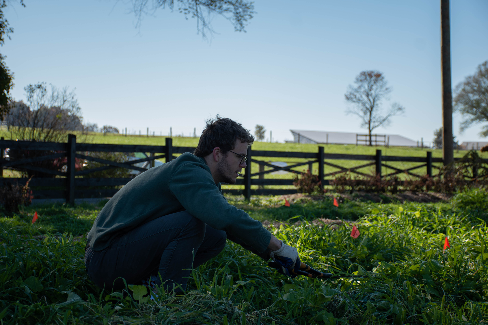

The Harrisonburg nonprofit, New Community Project, recently had the opportunity to change about six acres of local land into a carbon sequestration farm with beneficial science-proven techniques at work.
“Rockingham County is the heart of the agriculture in Virginia,” Dr. Wayne Teel, an Integrated science and technology professor (ISAT) at James Madison University said. “the surrounding counties have a lot of agriculture but Rockingham is the number one in the state.
The land was funded by the Oppenheimer Foundation and the New Community project in March 2021. The land has been partially converted to soil beds, where a few are being tested for max carbon sequestration after being sprayed with a bioreactor material to enhance biotic and fungal growth and cornrows.
“Typically, an acre might hold maybe three to five tons of carbon, whereas, with this bioreactor inoculation material, that's mostly fungal, they're finding it increases like 20 tons and even up to 30 or 40 tons of carbon per acre,” Tom Benevento, Sustainability Coordinator of the New community project said. “So we're excited to experiment with that.”
The five staff members and volunteers are also working on more regenerative aspects near their stream, such as a riparian buffer, and on their rolling hillside.
The farm, known as The Jubilee Climate Farm, has five full-time staff including Benevento and many volunteers who cycle through to help get work done. James Madison University (JMU) College of Science and Mathematics students and professors are working on research along with physical labor through the restorative farm to ensure the maximum amount of carbon can be sequestered.
“Jubilee Climate farm is … an opportunity for positive change in the way we relate to the land and to each other,” Benevento said.
Benevento and the farm’s staff have been experimenting with specific plant types. The farm has trees and cover crops such as annual vegetables, River Locusts, Willows, Osage orange, Persimmons and Paw Paws. Certain plants and trees, including those listed, are known for their ability to become large carbon sinks, a reservoir capable of storing carbon for an indefinite period, and are beneficial additions to carbon farms.
JMU students are also working on their capstone project at Jubilee Climate Farm. The students and staff aim to secure goats and a variety of fruit and nut trees for the, now empty, hillside of the farm and ultimately create a silvopasture.
Silvopasture is the practice of utilizing animals to be mutually beneficial to crops and land through grazing and fertilization. It’s the practice of utilizing animals to be mutually beneficial to crops and land through grazing and fertilization. This technique can potentially increase the land’s carbon sequestration by five to 10 times.
Along with restoring the environment, a primary goal of this farm and its staff is to restore human connection and community.
“We want to create space, that all these different voices are here together, and have an opportunity to farm,” Benevento said.
Since 1988, Harrisonburg has become home to thousands of refugees over the years. Benevento and The New Community Project house immigrants and refugees at one of their properties and try to provide as much support as they can throughout their work. On the Jubilee Climate Farm, some staff members and volunteers are from Mexico, Africa and other places across the globe.
“The other component of this work is that we're integrating an opportunity for lots of ideas, particularly folks who don't have a voice,” he said. “We want to create space, that all these different voices are here together, and have an opportunity to farm.”
They plan to share soil, plant growth, carbon sequestration data and known proven beneficial techniques to other farms locally and nationally through a Small Farms Carbon Alliance. Once they partner with other farms they plan to implement regenerative techniques that will maximize the carbon sequestration capacity for each piece of land to benefit the area the most that they can.
Nestled in the Shenandoah Valley, a modest vinyl banner hangs along a fence, serving as the only marker of Jubilee Climate Farm.
Alpha Phi Omega and JMU alumni, Will Vest, trims the cover crops on the beds.
Tom Benevento is the sustainability and project coordinator of New Community Project - Harrisonburg, a non-profit focused on sustainable agriculture and outreach to the community.
The beds are covered with tarps in late November to protect against frost and prepare for the winter months.
Tom Benevento and Charlotte Terry, a JMU student volunteer in Alpha Phi Omega, use a whiteboard to visualize plans for the farm.
Pictured is Jubilee Climate Farm’s kitchen, where an electric hot plate is used in place of a stove. Jubilee serves lunch everyday for its staff and volunteers.